Transcription intégrale structurée du support et de ses instructions. La mise en forme est adaptée au Web ; les compléments pédagogiques restent dans leur onglet distinct.
Administration Debian GNU-Linux
TP du Module 04 – Debian en mode maintenance
Avant de démarrer ce TP, il convient d’avoir suivi les vidéos des modules 1 à 4 et d’avoir réalisé les TP proposés.
Durée estimée
30 minutes à 1 heure
Solution
I. Sur le serveur Debian sans environnement graphique
Utiliser le menu GRUB pour démarrer le serveur en mode maintenance et sans avoir besoin de s’authentifier avec le mot de passe de root (voir support de cours)
Sur le menu de démarrage Grub, appuyer sur la touche ‘e’
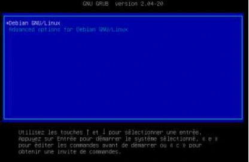
Administration Debian GNU-Linux
Chercher la ligne commencant par "linux" , à la fin de celle-ci remplacer 'quiet' par 'init=/bin/bash'
Attention : clavier en qwerty US Appuyer sur F10 pour lancer le système
Commenté [MC1]: Image dans le domaine public. Source : https://freesvg.org/golden-qwerty-keyboard- vector-image
Mappage de touche au format qwerty US
Une session root est ouverte sans besoin d'authentification
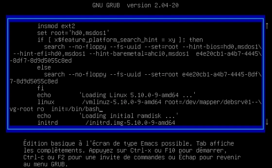
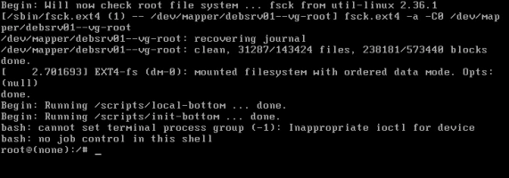
Administration Debian GNU-Linux
Saisir la commande " mount -o remount,rw / " Le message qui suit est une information, pas une erreur.
Une commande touch dans /root ne renvoi pas de message d'erreur, le ficher a bien été créée
Impossible de se déplacer dans le dossier de l'utilisateur standard
Le dossier /home est vide. Le dossier /home a été place sur un autre Volume Logique que la partition racine.
Seule cette dernière est directement accessible dans ce cas.
→ Utiliser la commande sync pour s’assurer que toute modification apportée est effectivement écrite ;
puis forcer l'extinction du serveur par les options de VMware Workstation
II. Sur le serveur Debian avec environnement graphique
Démarrer dans le "Rescue mode" (dans "Advanced options") à partir de l'ISO d'installation Debian* :
Vérifiez dans les paramètres de la VM que l'image CD est bien sélectionnée et que la case "Connect at power on" est bien cochée
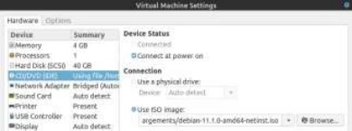
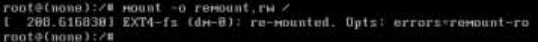
mount -o remount,rw /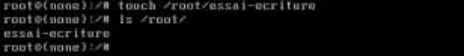
touch /root/essai-ecriture
ls /root/
essai-ecriture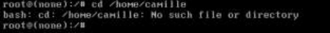
cd /home/camille
bash: cd: /home/camille: No such file or directory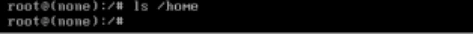
ls /home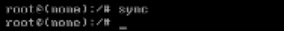
syncAdministration Debian GNU-Linux
Mettre le focus dans la VM est cliquer sur "echap" au logo vmware. Si le menu grub s’affiche, saisir la sequence ‘ctrl+alt+ins’ avant de réappuyer sur ‘echap’
Enfin valider le démarrage sur le CD-Rom
→ Choisir 'Advanced options' puis Rescue mode''
→ → Saisir la langue et la disposition du clavier
Saisie du nom d'hôte. Remarquez la mention 'mode de récupération' en haut de l'écran
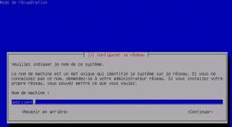
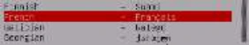
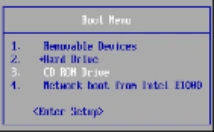
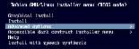
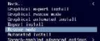
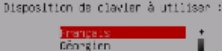
Administration Debian GNU-Linux
Ici il faut bien choisir le Volume Logique contenant le système de fichier racine. Remarquons l’importance des noms explicites pour les Groupes de Volumes & Volumes Logiques.
Choisir la première option pour avoir accès à notre système Debian installé Noter l’option “Reinstallation de Grub”, utile pour dépanner un système qui ne démarre pas
Après validation d'un message informatif, un shell root s'ouvre sans authentification Accédez au fichier /etc/passwd sur votre disque dur.
Ouvrir le ficher avec VI
Se déplacer en fin de fichier [G], Passer en mode insertion avec une nouvelle ligne [o], Saisir du texte puis revenir en mode commande [echap],
Enregistrer sans quitter (:w)
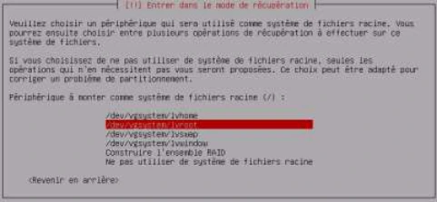
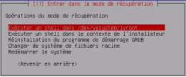
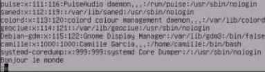
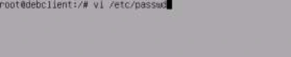
vi /etc/passwdAdministration Debian GNU-Linux
Un message nous informe de la bonne écriture dans le fichier
Supprimer la ligne que vous venez d'écrire (et seulement celle-ci) (dd)
Enregistrer et quitter (:wq)
La variable d'environnement USER nous renvoie la valeur 'root' également lisible simplement dans le prompt bash. NB : la commande ‘logname’ ne renvoie rien dans ce cas particulier
Non, comme vue précédemment, un shell root s'ouvre sans authentication dans ce type de cas
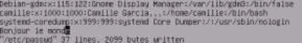
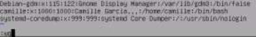
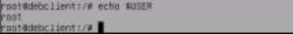
echo $USER
root